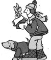
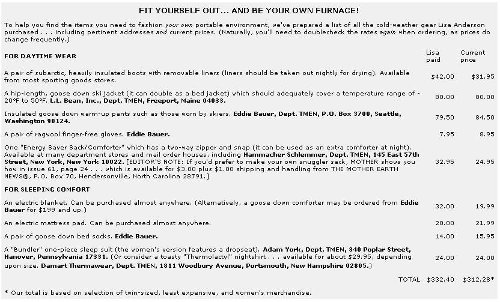

There's more than one way to beat the high cost of heating fuel!
One cold winter morning-as I went about my usual daily routine-I answered the doorbell . . . to find an absolutely dumbstruck UPS delivery man standing on the front steps. He was motionless for at least a full minute . . . gazing at me in speechless bewilderment!
I stared back with curiosity, and wondered (briefly) what was wrong with the poor fellow. Then I remembered that I had come to the door in my snuggler sack, which-although odd enough in itself-was made more comical by the added bulkiness of the down warm-up pants and jacket that I wore underneath it.
Of course, my "below-zero" boots may also have caught the man off guard . . . they did add a certain elephantine effect to my lower extremities. And I'm sure the old kerchief around my head did nothing to diminish the peculiarity of my appearance.
Ah yes, I concluded after a moment's hesitation, this particular delivery person has obviously never knocked on my door before! I felt compelled to explain my apparel.
"I'm dressed this way because we keep our thermostat set at 48°."
"Forty-eight?" the bewildered carrier repeated. "Don't you freeze?"
He just wouldn't believe that my husband Tom and I remain perfectly comfortable in a chilly environment that not only saves fuel, but helps us keep our health-and stick to our budget-as well!
Before Old Man Winter reared his forbidding head last year, you see, we had to decide whether or not to install woodburning stoves in our home. We knew we'd need four of the heaters to keep the sprawling house comfortable . . . and the alternatives to using multiple heat sources-such as breaking through the walls and installing ducts to channel warm air from one stove into all the rooms, or putting in a full-scale woodburning furnace-were expensive. And once we figured in the cost of wood (which is by no means exempt from inflation), none of these schemes enticed us any longer. Nor did we relish the idea of lugging logs, stoking stoves, and cleaning chimneys all season long!
So, after several days spent debating our heating options, I suggested to Tom that we create portable environments for ourselves. When he responded with only a blank expression, I explained that-from time immemorial-people who live in northern China have shielded themselves from the cold by wearing quilted jackets, pants, and boots. And, while Tom still looked a tad doubtful, I warmed to the idea and began to retrieve some of the various mail order catalogs that periodically appear in our mailbox.
Together, my husband and I compiled a list of wearing apparel that would-we hoped-keep us toasty at a thermostat setting of 48° F. The list included daytime garments such as down-filled jackets, pants, boots, and snuggler sacks, as well as a few extras that would insure a comfortable night's sleep. [EDITOR'S NOTE: For an individual price breakdown of the items the Andersons purchased-and a list of the sources that they bought from-see the accompanying sidebar.]
The total cost for each of us came to $332.40, making the venture less expen sive than any of the heating alternatives we had discussed. And our investment paid for itself that first season! (We found that we used 60% less heating oil and 10% less electricity than we had during previous Winters.)
Since we made our decision to live in a cold house, we've finally achieved, in retirement, what had eluded us in earlier years . . . hardy constitutions. We're enjoying absolutely vigorous health, more energy, and restful sleep . . . all of which are fringe benefits of our new, frugal lifestyle. Furthermore, we're no longer plagued with colds or weight problems, yet such added advantages came as a complete. surprise. All we'd intended to do was conserve heating oil.
When I'm dressed in my "winter uniform", my body produces heat, every time I move, within the down garments. If-while I'm sitting down, for example-I find myself ,getting chilled, I can generate warmth by simply flexing the muscles of my back, arms, hands, and feet. (Just wiggling my toes is a very effective heatproducer!)
Of course, each person will have his or her individual "comfortable" temperature level, so I'd suggest you purchase down-filled clothing one size larger than you'd normally wear . . . to allow for any extra layers of garments that you might want to add. I've always been sensitive to the cold, so my daytime wardrobe consists of an undershirt, tights, long underwear, a cotton turtleneck, a shetland pullover, a cardigan, warm slacks, and-over all of that -down pants and a jacket. (The sack is necessary only for sedentary work.)
I've also discovered, during my quest for warmth in a cold house, that a considerable amount of body heat escapes through the 'head. Therefore, I started wearing a kerchief both day and night. (You could wear a wig if you prefer . . . or choose a hooded parka instead of a jacket.)
Although I may look double my size, I'm not even aware of the extra clothes on my body anymore . . . primarily because goose down imparts warmth without adding much weight. Of course, there are synthetic insulation materials on the market today, such as Thinsulate (manufactured by the 3M Company), which are supposedly as warm as down but not nearly so bulky. (Still, we're partial to the fluffy feathered filling.)
My neighbors often ask me how I manage to cook and clean while swathed in such an outfit. Actually, I've become quite adept at moving about . . . even in the snuggler sack. However, I'd still suggest that "bundling beginners" steer clear of precious breakables . . . you'll soon find you're bigger than you think!
When doing heavy housework, I'm usually able to get by with fewer layers than are needed while sewing, reading, etc. The labor itself generates enough heat to keep me cozy.
(You may wonder how we manage to entertain guests. Well, we're planning to acquire enough sacks to keep our visitors snug. In the meantime, though, we simply turn up one of our three thermostats an hour or so before we expect company.)
"Portable environment people" will find that as the mercury plummets, the house will actually seem warmer, since the heaters will go on when room temperature drops below 48°. (The occasional warmth from the radiators will come as a pleasant surprise. But remember that even if the thermostat-which is usually located on an inside wall-registers a balmy 48°, your house may actually be five to eight degrees cooler near the outside walls and windows . . . particularly on a windy day.)
At one point during that first "bundling" winter, I thought our refrigerator was on the blink . . . since it seemed comparatively warm. Then I realized that my entire kitchen had become an icebox except during those times when I used my stove.
The situation has its fringe benefits, of course. For instance, I can store wholesale quantities of apples and citrus fruits anywhere in the house with little chance of spoilage. And my Christmas greenery remains attractive for months, without shedding a single needle. In fact, even my palms and potted bulbs do exceptionally well, with the latter retaining their blossoms much longer than they would in a warm house. But I've found it best to reduce the amount of water I give my houseplants by at least one half.
It's important to note that cold food-especially when it's consumed in a cold environment-will cause your body temperature to plunge. After experiencing just one chilling meal, I acquired the habit of placing such normally cold foods as fruit, yogurt, cheese, and juices-as well as plates-into my warming oven for half an hour before serving them. (Watch the cheese, though . . . some types will get runny when warmed.)
If you work at a desk for long periods of time, as I do, your circulation will become sluggish after several hours of sitting. Keep a pot of tea nearby for such occasions. Besides sipping the hot brew, you can occasionally warm your hands on the pot.
I find autosuggestion to be very helpful when washing, dressing, and undressing in the cold. So I suggest that-when you first get up in the morning-you take a deep breath and "think warm". Here's my routine:
Before busying myself in the bathroom each day, I place my undergarment layers beneath the blankets . . . by the time I'm ready to put them on, they're warm.
After bathing, I finish up with a splash of cold water. Once that shock has passed and I'm briskly towel-dried, my skin glows and tingles and the air doesn't seem so cold. (When shampooing my hair, though, I splurge and warm the room to 55°F . . . which, after 48°-believe me-feels almost tropical!)
A rubdown with oil is my favorite way to end the cold-water treatment . . . and I find corn oil mixed with a dash of lemon juice to be an excellent, inexpensive substitute for the fancy liquids offered at the cosmetic counter.
As I write this, I often check the temperature at my desk to make certain I'm reporting the facts accurately. It's no exaggeration to say that, as I sit here in my snuggler sack, I feel more comfortable than I did during the "72°F" era of my life. I'm impervious to drafts, and the down cocoon provides an even and constant warmth.
And what is the temperature at my desk? A balmy forty degrees!
EDITOR'S NOTE: For some additional coldweather clothing ideas, turn to "Snug-As-A-Bug Sleeper", on Page 192.
|
 |
 |
|